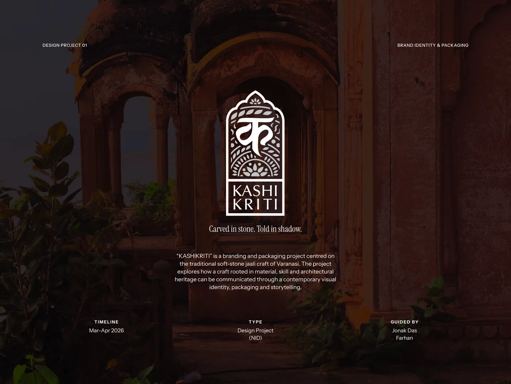
Kashikriti — brand identity and packaging for the soft-stone jaali craft of Varanasi
Design Project 01
Brand Identity & Packaging
Carved in stone. Told in shadow.
“KASHIKRITI” is a branding and packaging project centred on the traditional soft-stone jaali craft of Varanasi. The project explores how a craft rooted in material, skill and architectural heritage can be communicated through a contemporary visual identity, packaging and storytelling.
TIMELINE
Mar–Apr 2026
TYPE
Design Project (NID)
Guided By
Jonak Das Farhan
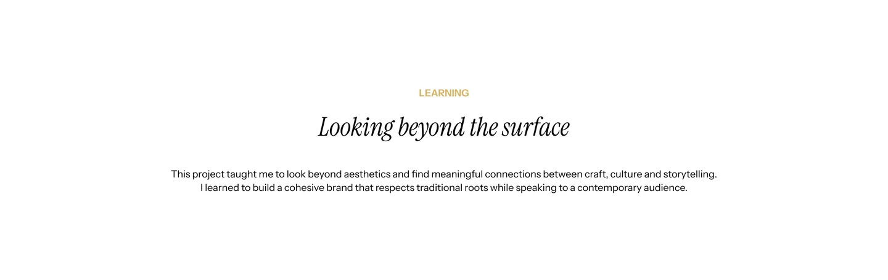
Learning
Looking beyond the surface
This project taught me to look beyond aesthetics and find meaningful connections between craft, culture and storytelling. I learned to build a cohesive brand that respects traditional roots while speaking to a contemporary audience.
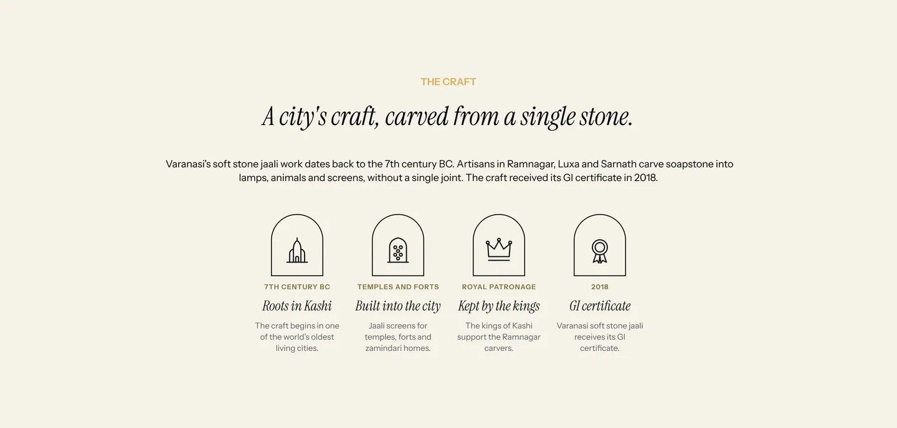
The craft
A city's craft, carved from a single stone.
Varanasi's soft stone jaali work dates back to the 7th century BC. Artisans in Ramnagar, Luxa and Sarnath carve soapstone into lamps, animals and screens, without a single joint. The craft received its GI certificate in 2018.
7th century BC
Roots in Kashi
The craft begins in one of the world’s oldest living cities.
Temples and forts
Built into the city
Jaali screens for temples, forts and zamindari homes.
Royal patronage
Kept by the kings
The kings of Kashi support the Ramnagar carvers.
2018
GI certificate
Varanasi soft stone jaali receives its GI certificate.
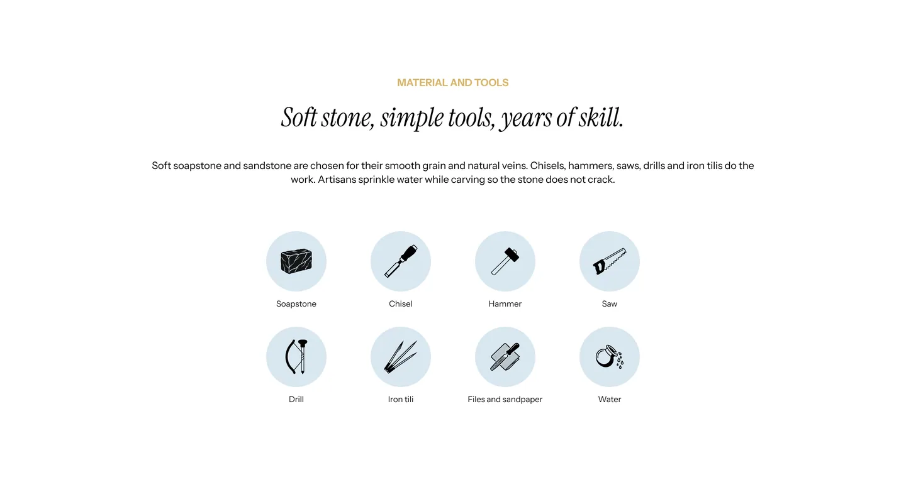
Material and tools
Soft stone, simple tools, years of skill.
Soft soapstone and sandstone are chosen for their smooth grain and natural veins. Chisels, hammers, saws, drills and iron tilis do the work. Artisans sprinkle water while carving so the stone does not crack.
Soapstone
Chisel
Hammer
Saw
Drill
Iron tili
Files and sandpaper
Water
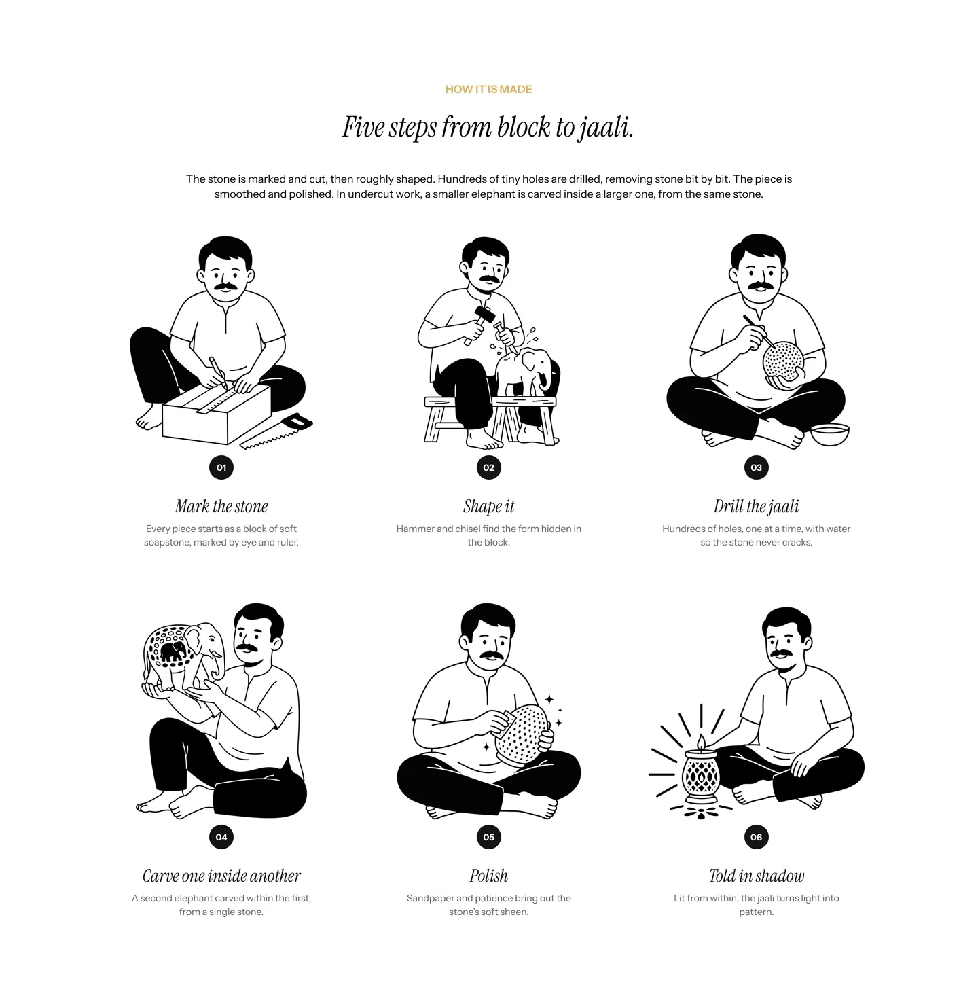
How it is made
Five steps from block to jaali.
The stone is marked and cut, then roughly shaped. Hundreds of tiny holes are drilled, removing stone bit by bit. The piece is smoothed and polished. In undercut work, a smaller elephant is carved inside a larger one, from the same stone.
01
Mark the stone
Every piece starts as a block of soft soapstone, marked by eye and ruler.
02
Shape it
Hammer and chisel find the form hidden in the block.
03
Drill the jaali
Hundreds of holes, one at a time, with water so the stone never cracks.
04
Carve one inside another
A second elephant carved within the first, from a single stone.
05
Polish
Sandpaper and patience bring out the stone’s soft sheen.
06
Told in shadow
Lit from within, the jaali turns light into pattern.
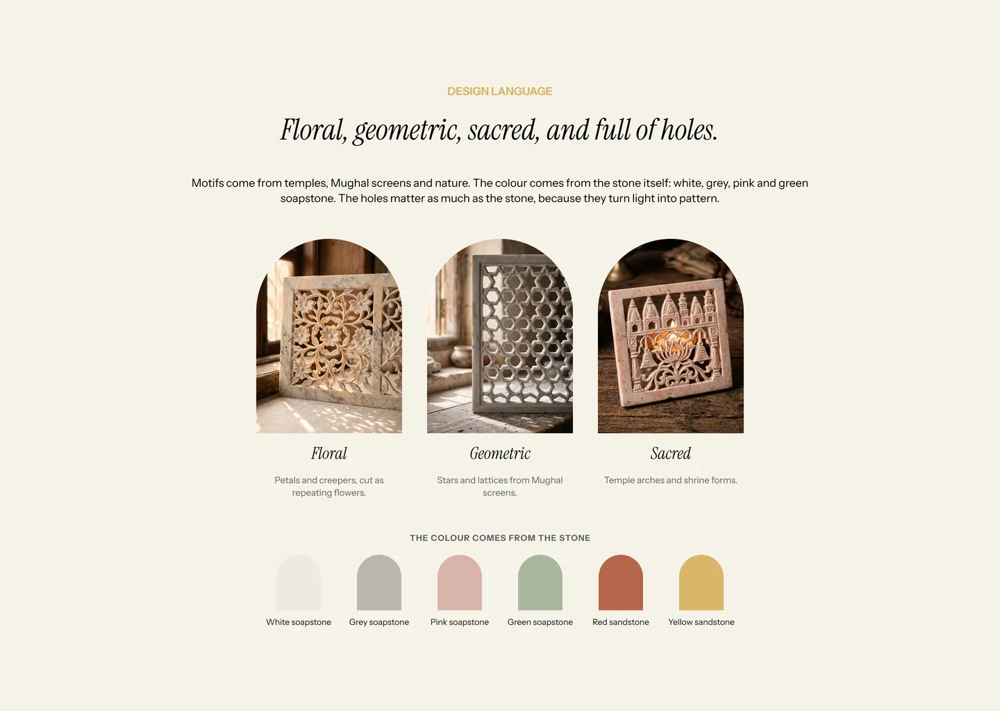
Design language
Floral, geometric, sacred, and full of holes.
Motifs come from temples, Mughal screens and nature. The colour comes from the stone itself: white, grey, pink and green soapstone. The holes matter as much as the stone, because they turn light into pattern.
Floral
Petals and creepers, cut as repeating flowers.
Geometric
Stars and lattices from Mughal screens.
Sacred
Temple arches and shrine forms.
The colour comes from the stone
White soapstone
Grey soapstone
Pink soapstone
Green soapstone
Red sandstone
Yellow sandstone
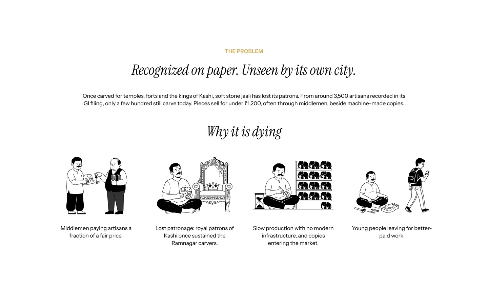
The problem
Recognized on paper. Unseen by its own city.
Once carved for temples, forts and the kings of Kashi, soft stone jaali has lost its patrons. From around 3,500 artisans recorded in its GI filing, only a few hundred still carve today. Pieces sell for under ₹1,200, often through middlemen, beside machine-made copies.
Why it is dying
Middlemen paying artisans a fraction of a fair price.
Lost patronage: royal patrons of Kashi once sustained the Ramnagar carvers.
Slow production with no modern infrastructure, and copies entering the market.
Young people leaving for better-paid work.
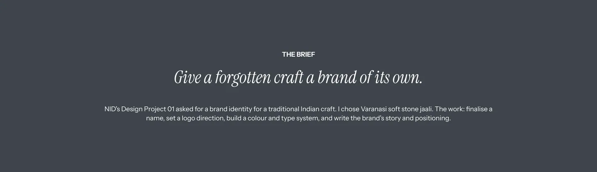
The brief
Give a forgotten craft a brand of its own.
NID's Design Project 01 asked for a brand identity for a traditional Indian craft. I chose Varanasi soft stone jaali. The work: finalise a name, set a logo direction, build a colour and type system, and write the brand's story and positioning.
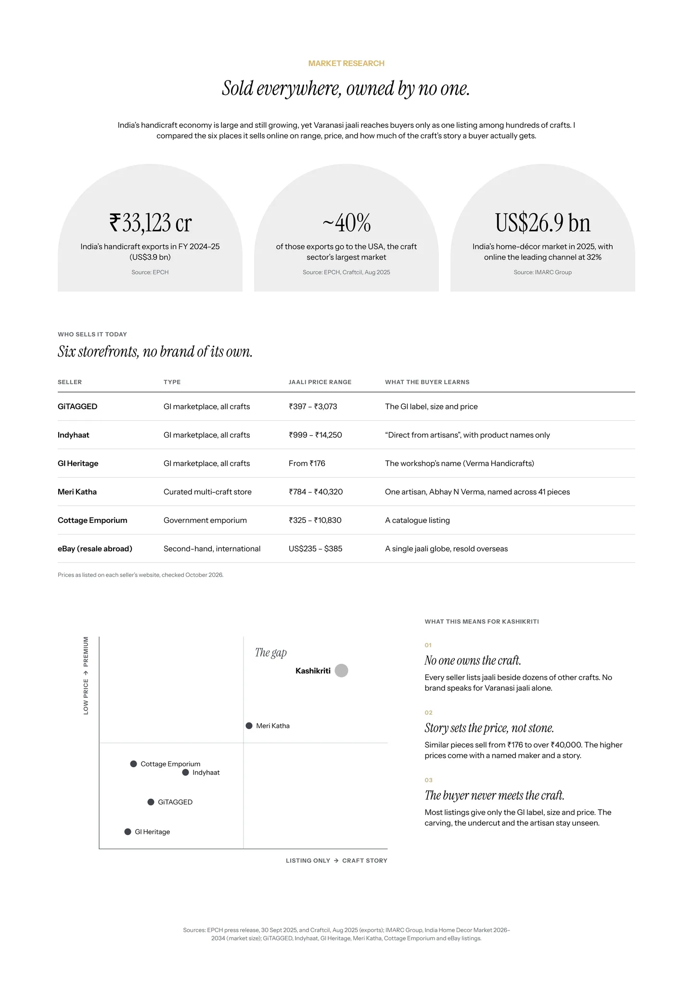
Market research
Sold everywhere, owned by no one.
India’s handicraft economy is large and still growing, yet Varanasi jaali reaches buyers only as one listing among hundreds of crafts. I compared the six places it sells online on range, price, and how much of the craft’s story a buyer actually gets.
₹33,123 cr
India’s handicraft exports in FY 2024–25 (US$3.9 bn)
Source: EPCH
~40%
of those exports go to the USA, the craft sector’s largest market
Source: EPCH, Craftcil, Aug 2025
US$26.9 bn
India’s home-décor market in 2025, with online the leading channel at 32%
Source: IMARC Group
Who sells it today
Six storefronts, no brand of its own.
Seller
Type
Jaali price range
What the buyer learns
GiTAGGED
GI marketplace, all crafts
₹397 – ₹3,073
The GI label, size and price
Indyhaat
GI marketplace, all crafts
₹999 – ₹14,250
“Direct from artisans”, with product names only
GI Heritage
GI marketplace, all crafts
From ₹176
The workshop’s name (Verma Handicrafts)
Meri Katha
Curated multi-craft store
₹784 – ₹40,320
One artisan, Abhay N Verma, named across 41 pieces
Cottage Emporium
Government emporium
₹325 – ₹10,830
A catalogue listing
eBay (resale abroad)
Second-hand, international
US$235 – $385
A single jaali globe, resold overseas
Prices as listed on each seller’s website, checked October 2026.
Listing only → Craft story
Low price → Premium
The gap
GI Heritage
GiTAGGED
Cottage Emporium
Indyhaat
Meri Katha
Kashikriti
What this means for Kashikriti
01
No one owns the craft.
Every seller lists jaali beside dozens of other crafts. No brand speaks for Varanasi jaali alone.
02
Story sets the price, not stone.
Similar pieces sell from ₹176 to over ₹40,000. The higher prices come with a named maker and a story.
03
The buyer never meets the craft.
Most listings give only the GI label, size and price. The carving, the undercut and the artisan stay unseen.
Sources: EPCH press release, 30 Sept 2025, and Craftcil, Aug 2025 (exports); IMARC Group, India Home Decor Market 2026–2034 (market size); GiTAGGED, Indyhaat, GI Heritage, Meri Katha, Cottage Emporium and eBay listings.
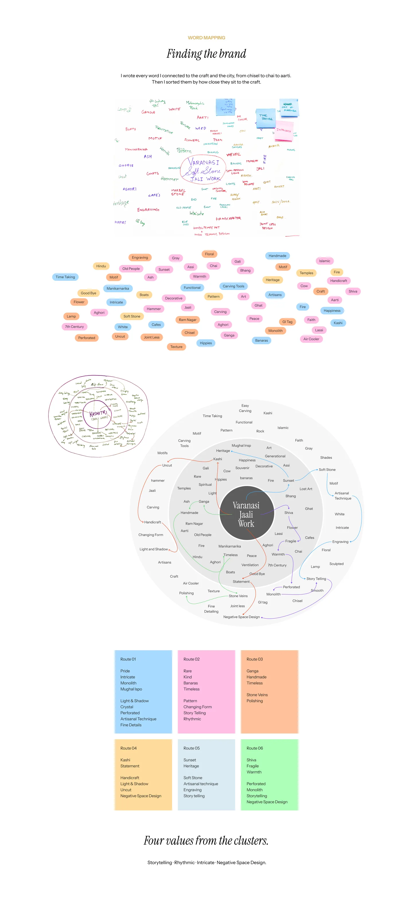
Word mapping
Finding the brand
I wrote every word I connected to the craft and the city, from chisel to chai to aarti. Then I sorted them by how close they sit to the craft.
Time Taking
Jaali
Ghat
Ganga
Pattern
Craft
Flower
Cafes
Aghori
GI tag
Good Bye
Lamp
White
Texture
banaras
Carving
Cow
Fire
Air Cooler
Aarti
Faith
Bhang
Temples
Hindu
Ash
Manikarnarika
Chai
Assi
Gali
Motif
Handicraft
Art
Decorative
Functional
Gray
Heritage
Fire
Engraving
Handmade
Artisans
hammer
Chisel
Hippies
Peace
Happiness
7th Century
Uncut
Monolith
Lassi
Aghori
Boats
Sunset
Carving Tools
Islamic
Old People
Motif
Intricate
Floral
Perforated
Joint less
Ram Nagar
Kashi
Shiva
Soft Stone
Warmth
Carving
Jaali
Ghat
Ganga
Light
Statement
Ventilation
Rare
Generational
Lost Art
Mughal Insp
Spiritual
Pattern
Craft
Flower
Cafes
Aghori
GI tag
Good Bye
Lamp
White
Texture
banaras
Fire
Air Cooler
Polishing
Stone Veins
Aarti
Faith
Bhang
Temples
Hindu
Ash
Manikarnarika
Timeless
Chai
Fragile
Assi
Gali
Cow
Motif
Handicraft
Changing Form
Light and Shadow
Negative Space Design
Art
Decorative
Functional
Gray
Shades
Heritage
Kashi
Souvenir
Fire
Time Taking
Engraving
Handmade
Artisans
hammer
Chisel
Hippies
Peace
Happiness
7th Century
Uncut
Monolith
Lassi
Aghori
Boats
Sunset
Carving Tools
Motifs
Fine Detailing
Islamic
Old People
Motif
Intricate
Floral
Perforated
Smooth
Story Telling
Sculpted
Artisanal Technique
Joint less
Ram Nagar
Kashi
Shiva
Soft Stone
Rock
Easy Carving
Warmth
Varanasi Jaali Work
Route 01
Pride Intricate Monolith Mughal Ispo
Light & Shadow Crystal Perforated Artisanal Technique Fine Details
Route 02
Rare Kind Banaras Timeless
Pattern Changing Form Story Telling Rhythmic
Route 03
Ganga Handmade Timeless
Stone Veins Polishing
Route 04
Kashi Statement
Handicraft Light & Shadow Uncut Negative Space Design
Route 05
Sunset Heritage
Soft Stone Artisanal technique Engraving Story telling
Route 06
Shiva Fragile Warmth
Perforated Monolith Storytelling Negative Space Design
Four values from the clusters.
Storytelling · Rhythmic · Intricate · Negative Space Design.
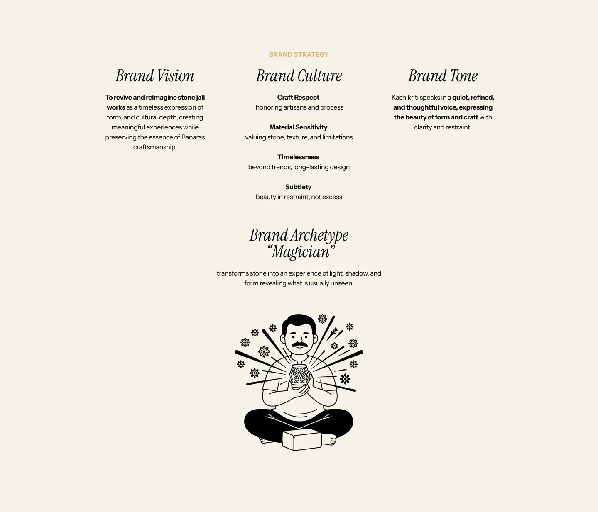
Brand strategy
Brand Vision
To revive and reimagine stone jali works as a timeless expression of form, and cultural depth, creating meaningful experiences while preserving the essence of Banaras craftsmanship.
Brand Culture
Craft Respect honoring artisans and process Material Sensitivity valuing stone, texture, and limitations Timelessness beyond trends, long-lasting design Subtlety beauty in restraint, not excess
Brand Tone
Kashikriti speaks in a quiet, refined, and thoughtful voice, expressing the beauty of form and craft with clarity and restraint.
Brand Archetype “Magician”
transforms stone into an experience of light, shadow, and form revealing what is usually unseen.
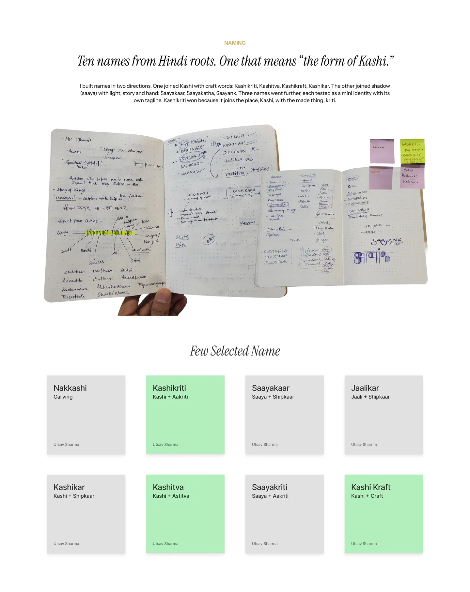
Naming
Ten names from Hindi roots. One that means “the form of Kashi.”
I built names in two directions. One joined Kashi with craft words: Kashikriti, Kashitva, Kashikraft, Kashikar. The other joined shadow (saaya) with light, story and hand: Saayakaar, Saayakatha, Saayank. Three names went further, each tested as a mini identity with its own tagline. Kashikriti won because it joins the place, Kashi, with the made thing, kriti.
Few Selected Name
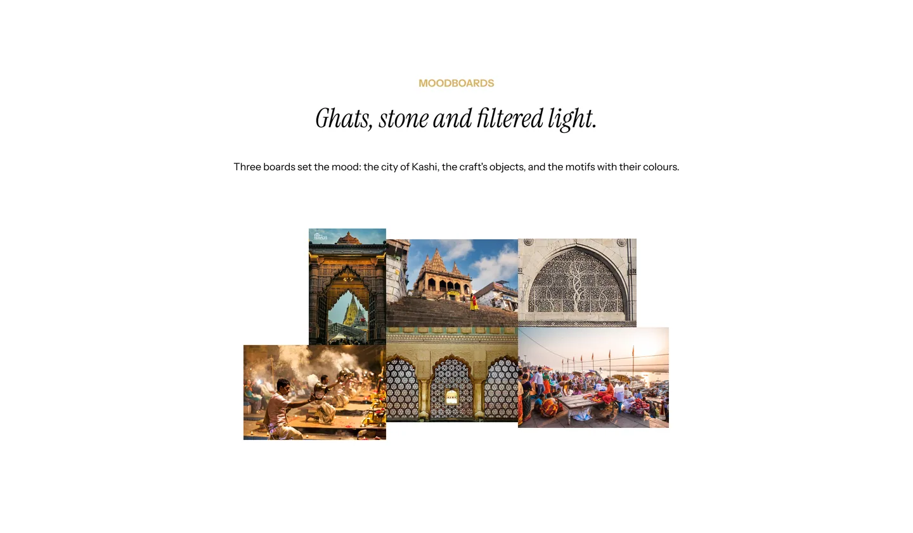
Moodboards
Ghats, stone and filtered light.
Three boards set the mood: the city of Kashi, the craft's objects, and the motifs with their colours.
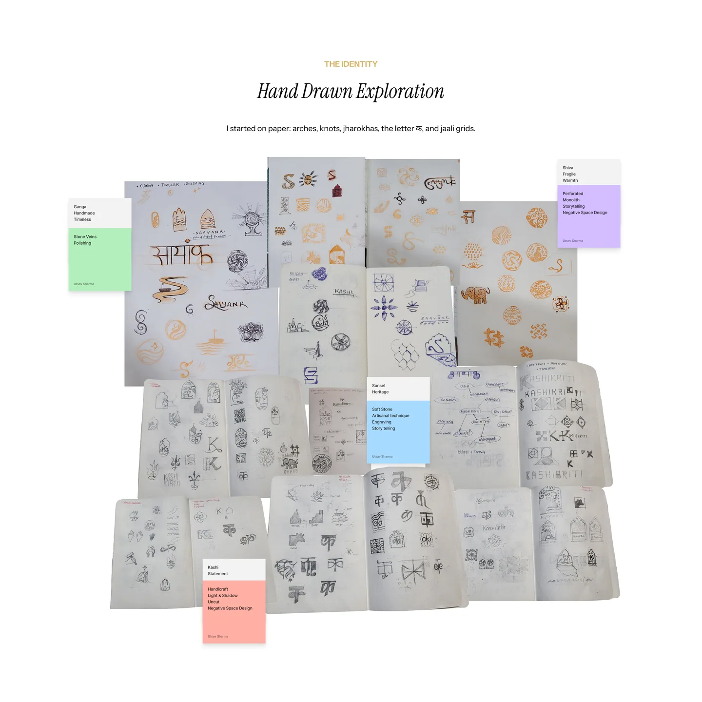
The identity
Hand Drawn Exploration
I started on paper: arches, knots, jharokhas, the letter क, and jaali grids.
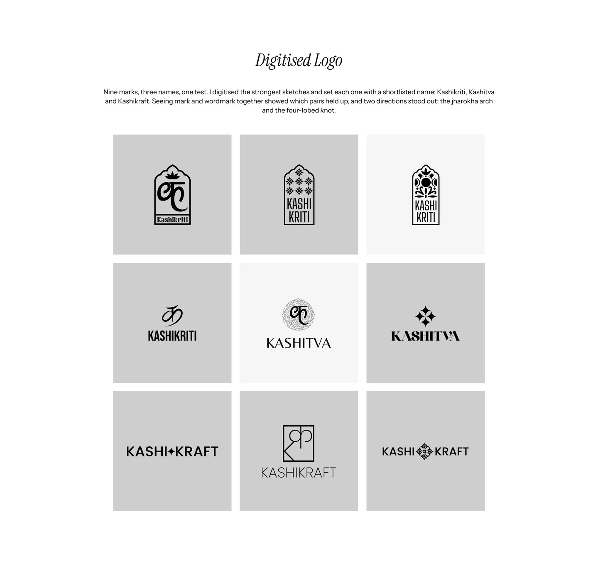
Digitised Logo
Nine marks, three names, one test. I digitised the strongest sketches and set each one with a shortlisted name: Kashikriti, Kashitva and Kashikraft. Seeing mark and wordmark together showed which pairs held up, and two directions stood out: the jharokha arch and the four-lobed knot.
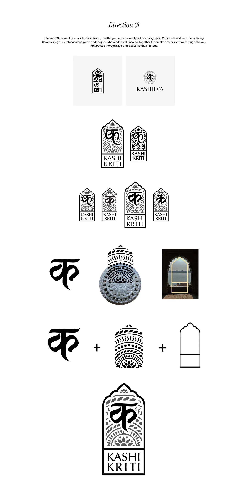
Direction 01
The arch: क, carved like a jaali. It is built from three things the craft already holds: a calligraphic क for Kashi and kriti, the radiating floral carving of a real soapstone piece, and the jharokha windows of Banaras. Together they make a mark you look through, the way light passes through a jaali. This became the final logo.
+
+
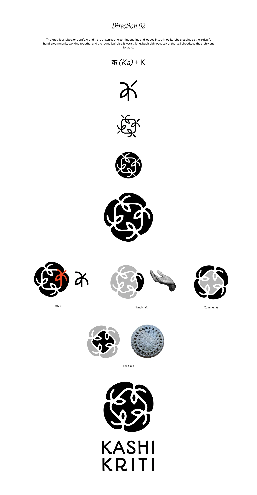
Direction 02
The knot: four lobes, one craft. क and K are drawn as one continuous line and looped into a knot, its lobes reading as the artisan’s hand, a community working together and the round jaali disc. It was striking, but it did not speak of the jaali directly, so the arch went forward.
क (Ka) + K
क+k
Handicraft
Community
The Craft
Kashi kriti
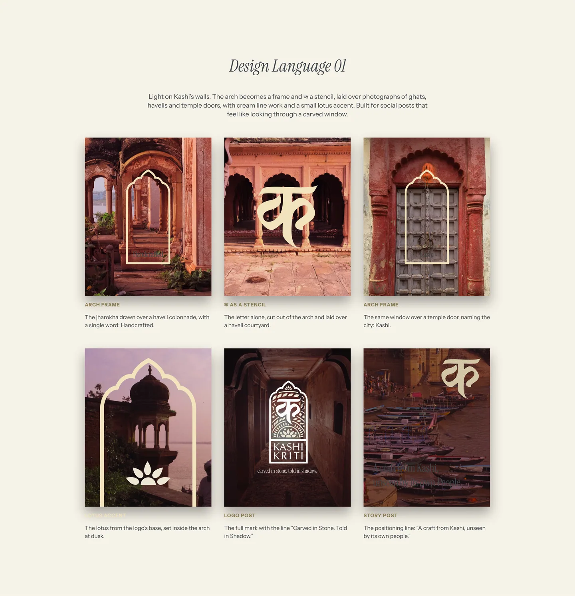
Design Language 01
Light on Kashi’s walls. The arch becomes a frame and क a stencil, laid over photographs of ghats, havelis and temple doors, with cream line work and a small lotus accent. Built for social posts that feel like looking through a carved window.
Handcrafted
Arch frame
The jharokha drawn over a haveli colonnade, with a single word: Handcrafted.
क as a stencil
The letter alone, cut out of the arch and laid over a haveli courtyard.
Kashi
Arch frame
The same window over a temple door, naming the city: Kashi.
Lotus accent
The lotus from the logo’s base, set inside the arch at dusk.
Carved in Stone. Told in Shadow.
Logo post
The full mark with the line “Carved in Stone. Told in Shadow.”
A craft from Kashi, unseen by its own People.
Story post
The positioning line: “A craft from Kashi, unseen by its own people.”
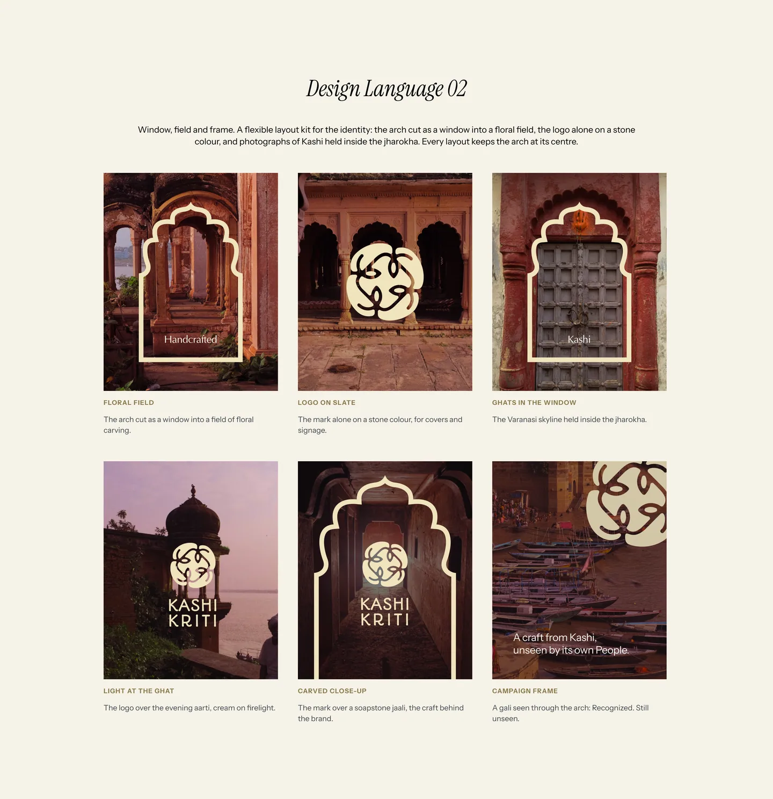
Design Language 02
Window, field and frame. A flexible layout kit for the identity: the arch cut as a window into a floral field, the logo alone on a stone colour, and photographs of Kashi held inside the jharokha. Every layout keeps the arch at its centre.
Floral field
The arch cut as a window into a field of floral carving.
Logo on slate
The mark alone on a stone colour, for covers and signage.
Ghats in the window
The Varanasi skyline held inside the jharokha.
Light at the ghat
The logo over the evening aarti, cream on firelight.
Carved close-up
The mark over a soapstone jaali, the craft behind the brand.
Campaign frame
A gali seen through the arch: Recognized. Still unseen.
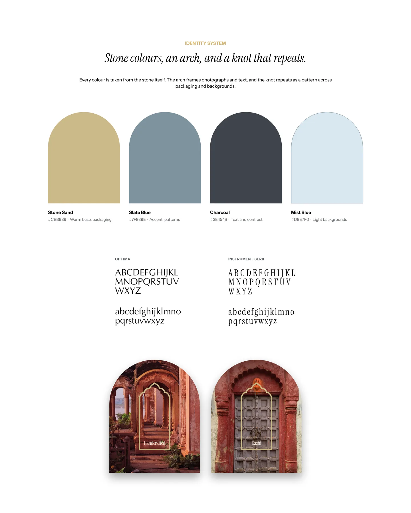
Identity system
Stone colours, an arch, and a knot that repeats.
Every colour is taken from the stone itself. The arch frames photographs and text, and the knot repeats as a pattern across packaging and backgrounds.
Stone Sand
#CBB989 · Warm base, packaging
Slate Blue
#7F939E · Accent, patterns
Charcoal
#3E454B · Text and contrast
Mist Blue
#D9E7F0 · Light backgrounds
Optima
ABCDEFGHIJKLMNOPQRSTUVWXYZ
ABCDEFGHIJKLMNOPQRSTUVWXYZ
Instrument Serif
ABCDEFGHIJKLMNOPQRSTUVWXYZ
ABCDEFGHIJKLMNOPQRSTUVWXYZ
Handcrafted
Kashi
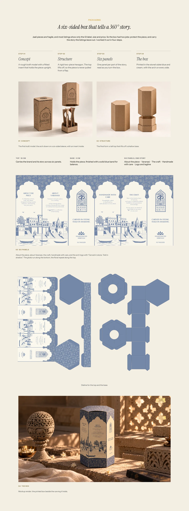
Packaging
A six-sided box that tells a 360° story.
Jaali pieces are fragile, so the box needed to protect them and feel worth opening. It is a hexagonal two-piece rigid box, a balance of culture, craft and minimal luxury: heritage-led, yet modern and premium.
Top · 16 cm
Carries the brand and its story across six panels.
Base · 3 cm
Holds the piece, finished with a solid blue band for balance.
Six panels, one story
Varanasi · The craft · The piece · Handmade process · Sustainability
The six panels laid flat, now carrying the arch logo
Dieline for the top and the base
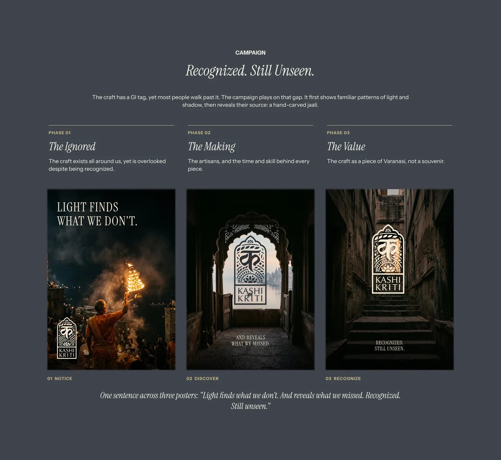
Campaign
Recognized. Still Unseen.
The craft has a GI tag, yet most people walk past it. The campaign plays on that gap. It first shows familiar patterns of light and shadow, then reveals their source: a hand-carved jaali.
Phase 01
The Ignored
The craft exists all around us, yet is overlooked despite being recognized.
Phase 02
The Making
The artisans, and the time and skill behind every piece.
Phase 03
The Value
The craft as a piece of Varanasi, not a souvenir.
LIGHT FINDS WHAT WE DON’T.
01 Notice
AND REVEALS WHAT WE MISSED.
02 Discover
RECOGNIZED. STILL UNSEEN.
03 Recognize
One sentence across three posters: “Light finds what we don’t. And reveals what we missed. Recognized. Still unseen.”
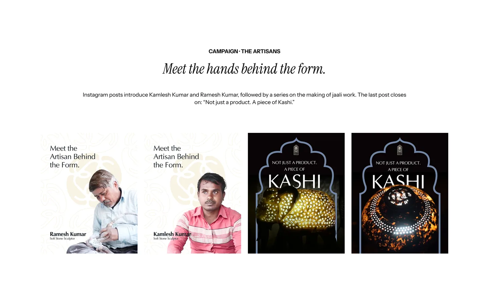
Campaign · The artisans
Meet the hands behind the form.
Instagram posts introduce Kamlesh Kumar and Ramesh Kumar, followed by a series on the making of jaali work. The last post closes on: “Not just a product. A piece of Kashi.”